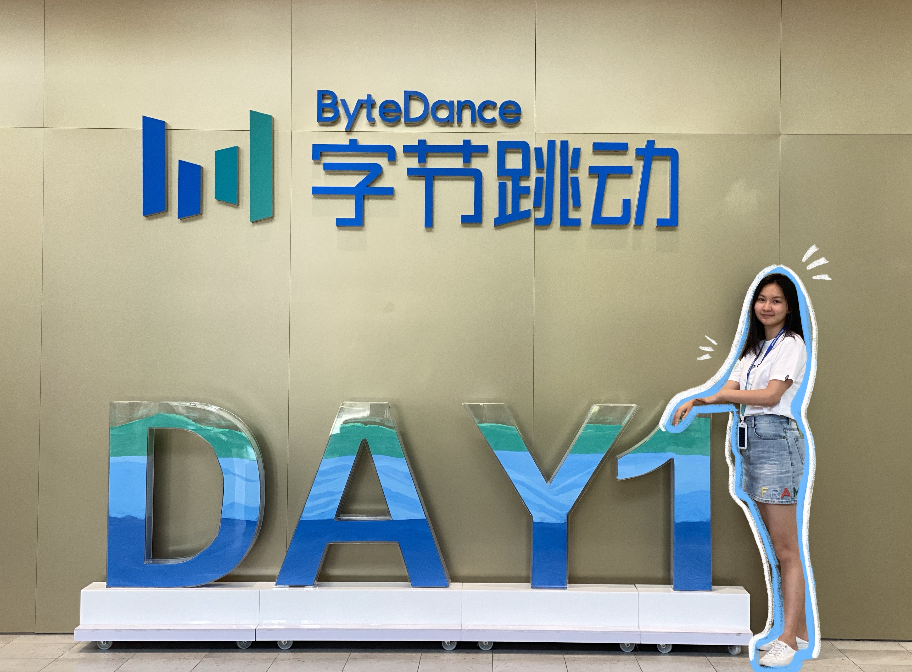
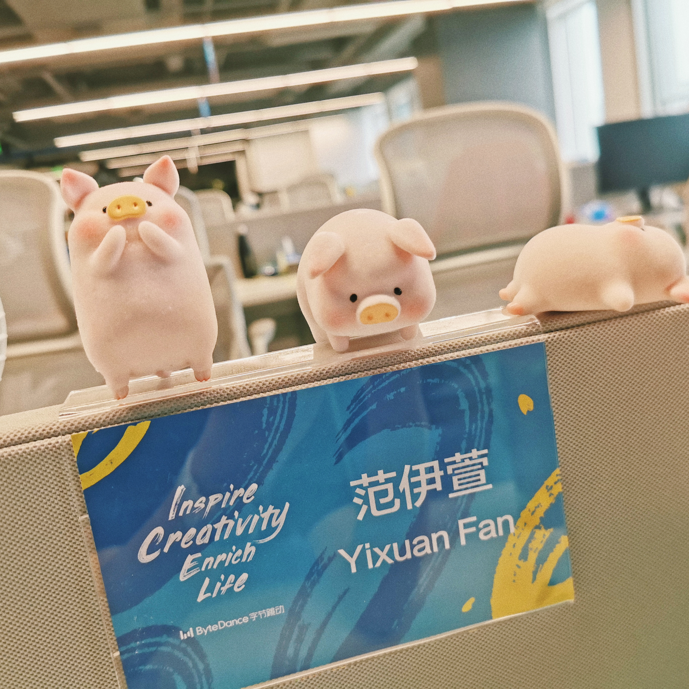
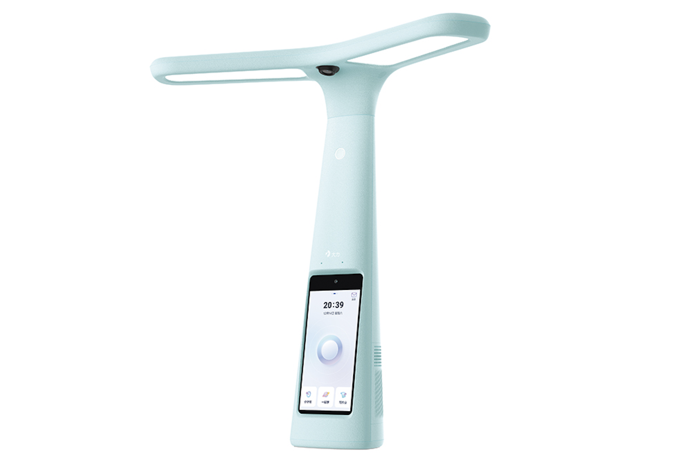

I spent the summer of 2021 at
This educational product has the appearance of a desk lamp.
This internship drastically improved my data analysis and digital marketing skills,
as I got the chance to experience sales support, business development and E-Commerce campaign branding.
I spent my summer at ZERO Education Department, a division of ByteDance, where I ran live-streaming sales operations
for an innovative educational hardware product on different platforms such as TikTok and Tmall, etc.
I was involved in many new and exciting projects such as business workflow planning, recruitment
(we only had three people at first and ten people when I left), market exploration and many other that I can only experience as a "First Generation Intern".
The environment was ambiguous, fast-paced, and fast-growing, and it just felt like working for a start-up company.
So, What I exactly accomplished @ByteDance?
Marketing & Branding
1. Reached 300,0000 RMB in live-streaming product sales with 0.6M live-streaming views while working with cross-functional
stakeholders such as TikTok, Tmall, etc
2. Increased traffic acquisition on livestreaming channel by 25% while developing deep understanding of the digital advertising
market strategy
Sales Excellence Support
1. Worked with Cross-Functional teams to provide business support and insights and pricing Strategy
2. Support Sales Team in driving sales intentionality by orchestrating cross-team collaboration and communication
3. Complete educational industry market assessments in order to determine business intention by utilize sophiticated research and data collection
Strategy Analyzation
1. Increased ROI to 150% within three months by using internal analytical tools to study customer and market trends
2. Associate and managed the database in internal SQL Server for the livestreaming-sales traffic monitor, and provide objective and data-driven recommendations for growth opportunities
3. Optimized marketing content on multiple platforms, and Increased traffic acquisition on livestreaming channel by 25% while developing deep understanding of the digital advertising market strategy
Operational Support
1. Involed in Recruitment process, select 5 candidates from 100+ resumes, and get 3 hired eventually
2. Assist in the implementation of marketing initiatives and materials, and coordinate the tracking of monthly OKR performance reports
3. Implement process improvements to streamline marketing functions, also analyze each team member's ability matrics to improve business efficiency
About the product I was working with
This product uses advanced computerized image recognition, voice recognition and machine learning technology to allow elementary and middle school students to use the product to:
1. Take pictures of homework through the camera on top of the lamp, and then automatically check the assignment's mistake through the system's image recognition technology and internal system
2. Correct the sitting posture through the camera on the lamp and the image recognition technology
3. Use the screen of the lamp to make video calls without a cell phone
4. With the built-in database, you can use the learning software inside the lamp for language, math and English tutoring in primary and junior high school.


This internship is a memory that sticks with me, not only because it is the milestone that I finally took the first step I dreamed of:
have my internship at a technology company, but also, I had the privilege of being involved in a newly established business/department.